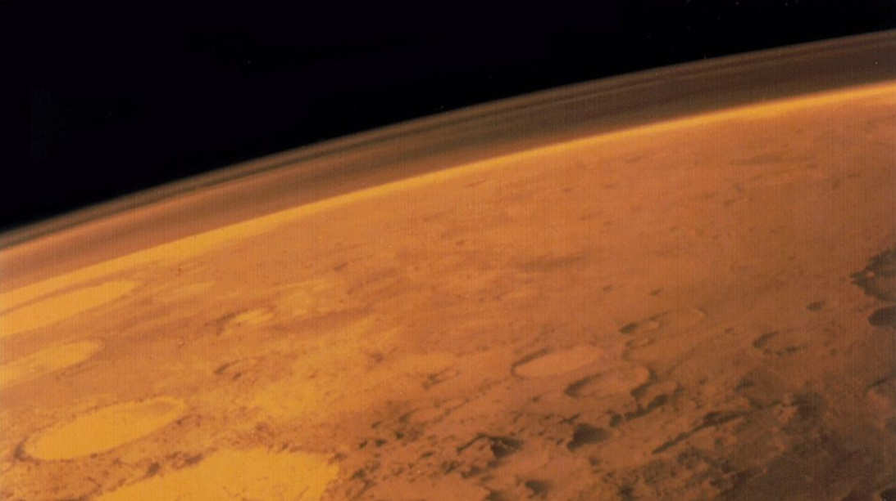

Radiation Shield Commander
Successfully protect the crew from space radiation
🔒 LOCKEDYour Journey Through Mars
Every challenge you complete makes you a better astronaut. Collect your badges, explore NASA discoveries, and keep learning about the Red Planet!
Successfully protect the crew from space radiation
🔒 LOCKEDComplete the astronaut eye-health challenge
🔒 LOCKEDMaintain the crew's muscle and bone health
🔒 LOCKEDKeep the life-support water system running
🔒 LOCKEDIn microgravity, astronauts can sleep in different orientations. They use special sleeping bags attached to the walls so they do not float around while sleeping.
NASA SOURCE ↗
Mars has a thin atmosphere and no global magnetic field. This means astronauts need protection from harmful space radiation during future missions.
NASA SOURCE ↗NASA's Veggie system grows plants aboard the International Space Station. This research helps scientists study how to provide fresh food on future deep-space missions.
NASA SOURCE ↗A Martian day, called a sol, lasts about 24 hours and 37 minutes. It is slightly longer than an Earth day!
NASA SOURCE ↗